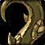
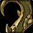
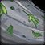
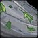

Dungeons & Affixes
This season's mythic+ dungeons has a lot of challenging mobs and bosses. In this section, we will first cover some optimal dungeon routes, along with which enemies to be careful of. Next, we will cover how to live through certain boss encounters, in addition to helping your team live. Finally, we will go over all of the affixes and which ones that can change your route.
Dungeons
We will go over the overall difficulty of each dungeon. Later on this page, we will go into more detail about each boss and certain mobs.

Atal'Dazar
Easy
Atal'Dazar is a very easy dungeon this season. There aren't any mobs that do a lot of tank damage, and all group damage is avoidable or easily healable. Yazma, especially on Tyrannical, can really suck though.
Dungeon Routes
Every route is designed to be as pug friendly as possible. They can be competitive routes all the way up to +26. Of course, certain affixes may change the speed at which you can pull. You should always take into account your group composition, too.

Bloodlust Timings: Rezan, Pull 10, Yazma
This route is fairly straightforward. At the start, you want to hug left when running past the Toxic Saurids, where you'll pull the two Feasting Skyscreamers into Rezan. From there, you can just follow the route exactly, as there are no more skips and tricks. Make sure that you lust Rezan, the center dinosaur pack (pull 10), and Yazma.
Bloodlust Timings: Pull 1, On cd, Pull 14, Kur'talos Ravencrest
The start of this route may look confusing, but it is very simple. At the start, you will list the first pull. The pull afterwards, you want to taunt the Ghostly Protector at the top of the stairs. You then invis the mini boss, and taunt the Ghostly Councilor into the boss. After the start of the dungeon, it is a very straightforward route, where you just hold W. On fortified, you want to lust on cooldown, the Felspite Dominator hallway, and the final boss. On tyrannical, you lust Illysanna Ravencrest and Kur'talos Ravencrest.
Bloodlust Timings: Pull 1, Oakheart, Shade of Xavius at 50%
This route is pretty standard, just with an extra skip. It starts off with you holding W, where you'll eventually invis pot/warlock skip the two bears. After Archdruid Glaidalis, you want to skip the second pack by holding right against the mountain. If the Rotheart Dryad is running around, you can Paralysis her and Ring of Peace her out of the way. From there, you do the standard route, skipping the last Bloodtainted Fury and the first pack on the way to Shade of Xavius. Make sure that you always lust Oakheart and Shade of Xavius.
Bloodlust Timings: Pull 1, Manifested Timeways, Iridikron the Stonescaled
There is nothing fancy about the DOTI: Galagrond's Fall route. At the start, you do a big pull with lust. From there, you move through the dungeon normally, lusting Manifested Timeways. Afterwards, for the first Risen Dragon pack, you can hold left and pull just one dragon. Then, you proceed through the dungeon normally, eventually invis skipping the last pack before Iridikron the Stonescaled, whom you will lust.
Bloodlust Timings: Pull 1, Pull 6 (if up) OR Alliance Destroyer, Chrono-Lord Deios
This dungeon doesn't leave much room for change, so this route is very straightforward. The first pull, as always, is a big one with lust. I choose to not kill the pat and quad pack, but if you're uncomfortable with that, you can choose to change out later pulls for them. After Tyr, the Infinite Keeper, you want to lust the double dragon pack. If lust isn't up, then you go straight for Time-Lost Battlefield and lust the Alliance Destroyer. From here on, you finish the dungeon, making sure to lust the last boss.

Bloodlust Timings: Pull 1, Ancient Protectors, Yalnu
Most of the percent in this dungeon comes from the start. For the first pull, you want to lust to get it on cooldown. Afterwards, you follow the route accordingly. After pull 12, you want to invis to Ancient Protectors, whom you will lust. Finally, you finish out the dungeon normally, lusting Yalnu.
Bloodlust Timings: Pull 1, Commander Ulthok, the Festering Prince, Ozumat
This route is pretty standard. You pretty much just hold W the entire time, making sure to lust the first pull, Commander Ulthon, the Festering Prince, and Ozumat. Make sure that you are interrupting all of the mobs as much as possible, along with cc'ing them if you can't interrupt.
Bloodlust Timings: Heartsbane Triad, Soulbound Goliath, Pull 16
This route may look really complicated, but once you understand it, it's very simple. Right before the dungeon starts, you want to use your invis pot. This way, once the dungeon starts, you can run straight to Heartsbane Triad, whom you will lust. When it's just Briar left alive, make sure to pull the mobs in the room into her. For pull 4, you want to Paralysis the Coven Thornshaper; you will pull her into the next pull. Afterwards, you pull Matron Bryndle with the two Coven Thornshapers. Once the Coven Thornshapers are dead, you want to pull g17 into Matron Bryndle. If lust is up, you want to fight Soulbound Goliath and lust him. If it's not, then you clear some of the trash before Raal the Gluttonous. Once you do all of this, you just have to hold W. On fortified, make sure you lust pull 16, and on tyrannical, you lust Lord and Lady Waycrest.
Bosses
Almost every boss has some sort of trick that can make the fight much easier. In this section, we will go over the difficulty of each boss, along with what to be careful of and how you can help your party.
Priestess Alun'za
Easy
This boss is extremely easy. There is pretty much no tank damage, very little group wide damage, and she dies extremely fast, even on tyrannical. There aren't really any tricks for her, either, besides imprisoning one of the ads when they spawn so you don't have to kill it.
The Amalgam of Souls
Easy
This boss is super simple. You just dps him, making sure to face him away from the party as much as possible. When the spirits come out, you are really good at controlling them with Leg Sweep and Ring of Peace.
Archdruid Glaidalis
Easy
This boss is super easy if you know the trick. You want to make sure that you tank this boss a small distance from a wall, facing away from your team, and using a defensive for the first hit of his tank buster, Primal Rampage. If you have enough distance between him and the wall behind you, then you should be able to Roll out and not get hit by the second hit. The rest of the fight is really easy, and you just rotate him around the room, moving away from the bad stuff on the floor.

Chronikar
Easy
This boss is extremely easy. There really are no tricks to it. If you want to make it even easier than it already is, you can save up on Gift of the Ox orbs and instant heal off the heal absorb from Chronoshear.

Tyr, the Infinite Keeper
Hard
This boss is super hard. He takes forever to kill, requires a lot of healing, and his tank buster can delete you if you aren't prepared for it. There really aren't any tricks for him, either. You just want to face him away from your party the entire time, baiting his attacks to the outside.

Witherbark
Easy
This is the easiest boss this season. There is no trick, you just pull him to the back of the room, facing him away from your group. When he goes into his Brittle Bark stage you want to pop cds and burst him down as fast as possible.
Lady Naz'jar
Easy
This boss is super easy on low to medium keys and can be a little scary for your healer on high keys. When the ads spawn, make sure that you are standing on one of the ranged ads so that you can interrupt her and move everything into the middle for easy grouping.
Heartsbane Triad
Hard
This boss is super painful for the group. There are so many interrupts that it's literally impossible to interrupt everything. There are also no tricks to helping out your party, so you just have to have faith in everyone else.
Affixes
At the moment there are a lot of punishing affixes in mythic+. In this section, we will go over each one and how they may impact certain dungeons.


 

 

Fortified
This affix makes mobs have additional health and do additional damage. This is much preferred over Tyrannical, as it makes dungeons overall easier, and you can still time after a wipe or two. Make sure that you pull a little bit smaller than you would on tyrannical, though.